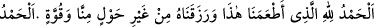
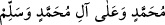
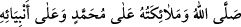
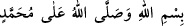
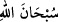
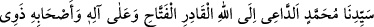
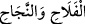

(Allâh’ım Muhammed ve Muhammed’in âilesine salât eyle, rızıklarımızı temiz ve hoş
kıl, ahlâkımızı güzelleştir.)”
37- Yemeğin sonunda da salevât getirilmeli ve (mesela) şöyle duâ edilmelidir:
“(Bizim kendimizden bir güç ve kuvvetimiz olmaksızın bize bu yiyecekleri yediren ve
rızık olarak veren Allâh’a hamd olsun. Nîmetiyle her türlü sâlih amelin tamam olduğu
ve bereketlerin indiği Allâh’a hamd olsun. Allâh’ım Muhammed’e ve Muhammed’in
ailesine salât ve selam eyle.)”
38- Bir meclisten kalkarken salevât getirilmeli ve şöyle demelidir:
“(Allah ve melekleri, Muhammed’e ve bütün peygamberlere salât etsin.)” Bu duâ, o
mecliste olan boş ve lüzumsuz söz ve davranışlara keffâret olur.
39- Bazılarına göre aksırınca salevât getirilir. Çokları ise bunu kerih görmüştür.
Nitekim eş-Şir‘a ve şerhinde böyle denilmiştir. Aksırma sırasında Hz. Peygamber
(s.a.)’in ismi zikredilmez. Çünkü kişi aksırdığında sünnet olan “
” demesidir.
Hayvan boğazlarken ve kurban keserken Hz. Peygamber (s.a.)’in ismi zikredilmez. Hatta
bir kimse “Allâh’ın ve Muhammed’in adıyla.” dese bu kesilen hayvanın eti helal olmaz.
Çünkü bu kesim işi sırf Allah adına yapılmamış olur. Şâyet “
(Allâh’ın adıyla ve Allah Muhammed’e salât etsin derse mekruh olur. Bir şey beğenilip
hayret edildiği zaman da salevât getirilmez. Çünkü taaccüb edildiğinde yapılacak zikir “
” demektir.
40- Kulak çınladığı zaman da salevât getirilmeli sonra şöyle denilmelidir: “Beni
ananı Allah da hayırla ansın”
41- Nikâh hutbesinde de salevât getirilmeli ve şöyle denilmelidir: